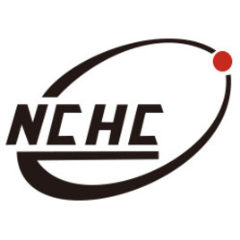
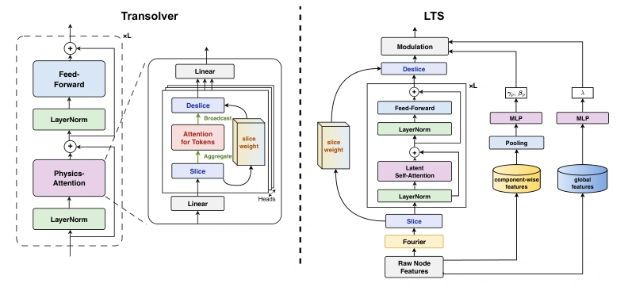
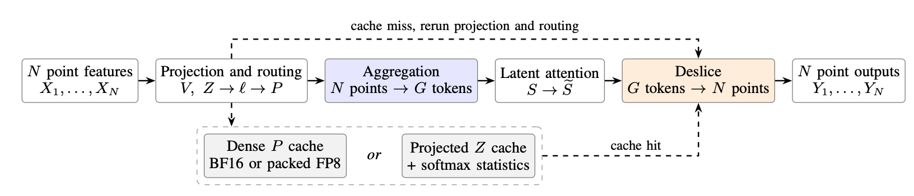
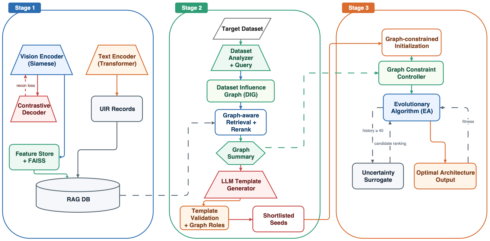

Lin Chou
I am a bachelor's student at National Sun Yat-sen University, advised by Prof. Sheng-Min Chiu, and a member of the AIIS Lab. I am also a Research Intern at the National Center for High-performance Computing.
My long-term research goal is to build robots that learn and act reliably in the real world.
Education & Experience
Incoming Exchange Student in Mathematical & Computer Sciences
Nanyang Technological University
Research Intern
National Center for High-performance ComputingResearch Interests
- Robot Learning
- World Models
- Vision-Language-Action Models
- Neural Operators
Publications


What to Retain in Learned Routing: Representation, Consumer Precision, and GPU Execution

RAG-NAS: Retrieval-Augmented Generation Based Efficient Knowledge-Guided Neural Architecture Search
Prior Strength and Source Attribution in Retrieval-Guided Neural Architecture Search
Projects
Dorna 2 Embodied Simulation
An embodied simulation platform for the five-axis Dorna 2 arm, with a Linux GPU simulation server and a Mac visualization client. Newton uses MuJoCo Warp for parallel physics, while joint states stream over SSH to Newton ViewerGL on the Mac. A simulation adapter accepts joint commands through the official Dorna2 Python SDK.
CPU MuJoCo supports local validation of the robot model. Isaac Lab runs batched PPO reaching experiments on the Newton and MuJoCo Warp backend.
3D Reconstruction and Constraint-Aware Navigation
An RGB-D reconstruction pipeline that registers point clouds and plans routes on semantic occupancy maps while checking constraints such as obstacle clearance.
Mean camera-position error was 5.88 cm on a 191-frame first-floor capture. On the second floor, depth visibility of sampled navigable locations rose from 94.88% to 99.77% after combining 882 observations.